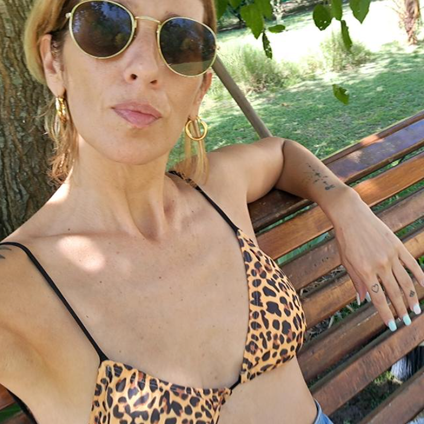
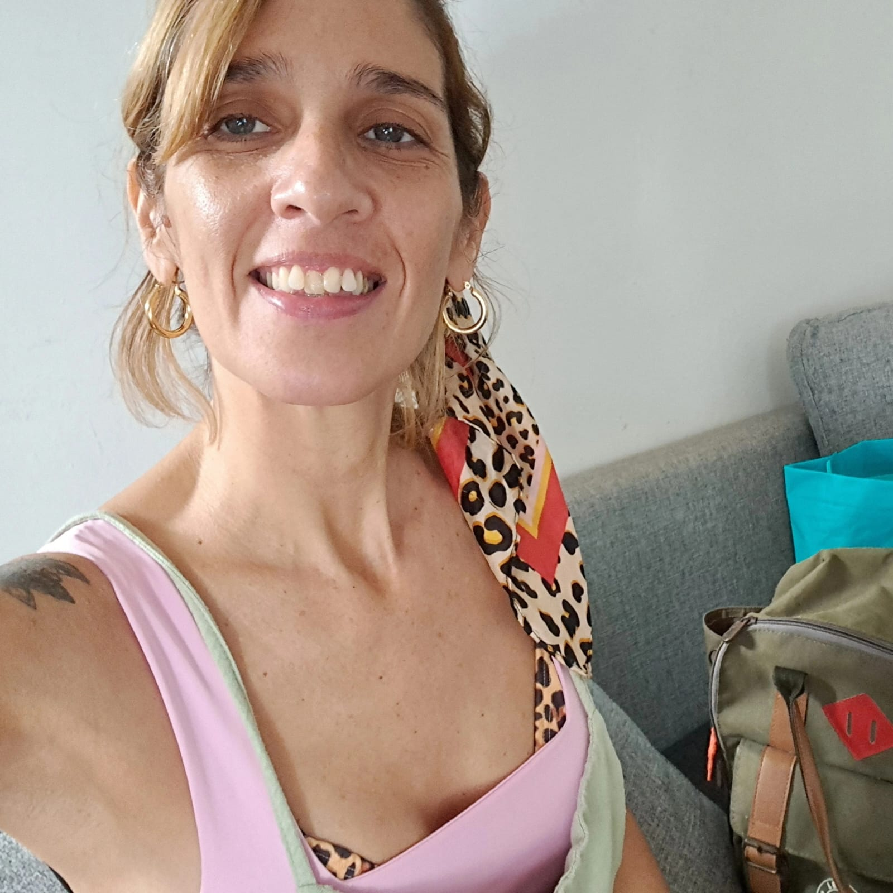
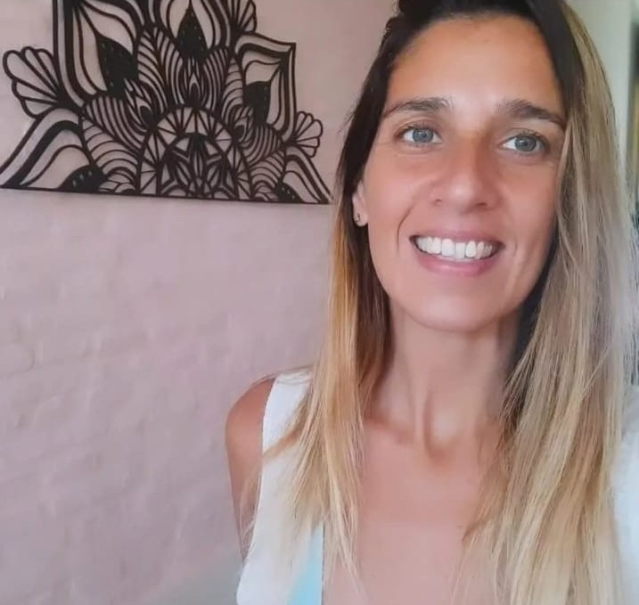
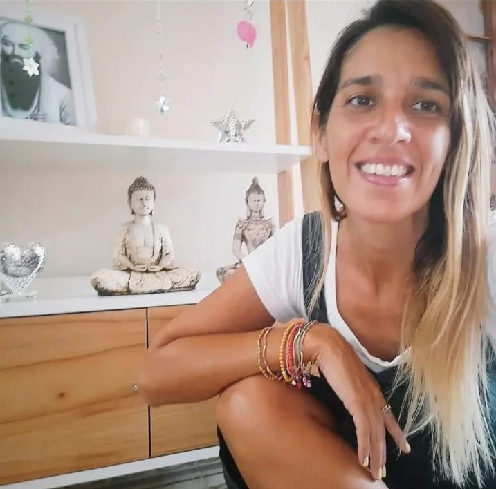

Biodescodificación Emocional
Acompaño procesos de sanación profunda a través de la Biodescodificación. Entender el origen emocional de nuestros síntomas es el primer paso hacia la libertad. Sesiones personalizadas online y presenciales.


